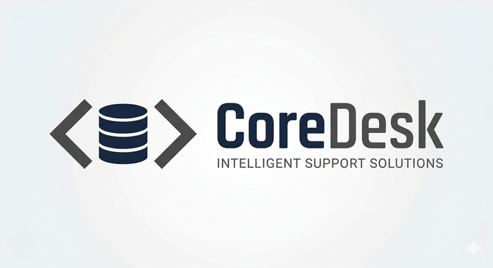

Ingresa tus datos para comenzar una sesión de soporte técnico con CoreDesk.
Nombre completo
Correo electrónico
Empresa
Comenzar soporte
CoreDesk Support
Demo
⏱ 00:00 en sesión
Sesión activa
👤 Atendiendo a:
🏢 Empresa:
📧 Correo:
Finalizar este chat
➤
↑
Cerrando el chat
Gracias por usar CoreDesk